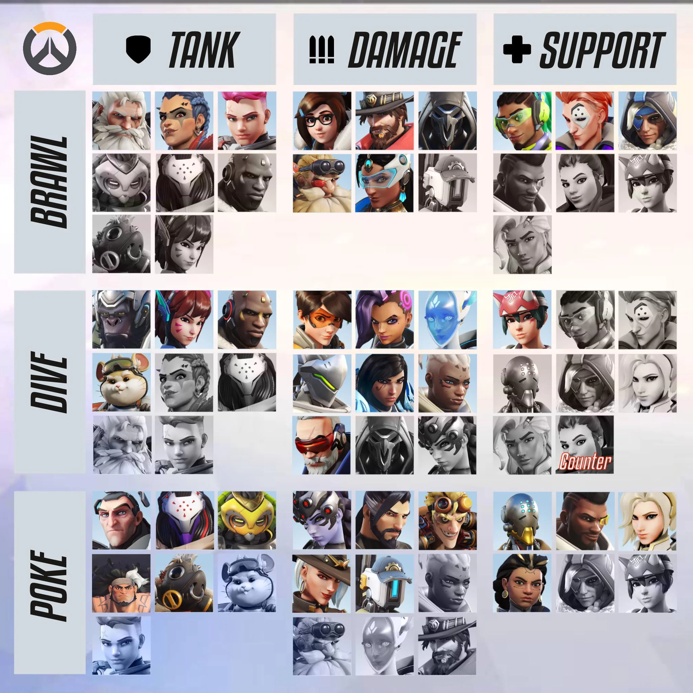

Home
My name is Rick Xie, and this is my simple website. I am a Northeastern University student currently studying computer science and business combined. I have an interest in video games, manga, programming, and health/fitness. Currently, my favorite game is Pokemon Trading Card Game Pocket. I like to play competitively and against my friends, and I like to collect the artwork on the cards. I also like health and fitness. In the past I would go to the gym every morning at 6am, but now as this semester's workload has increased drastically I am now unable to support that lifestle. I still occasionally am able to go to the gym when a combination of Algorithms and OOD aren't stopping me. I am not really sure what else to talk about, so I will explain the art of team composition in multiplayer shooting games. In most of these games, there are three roles: tank, damage, and support. Depending on the relative power of the role, tank and damage can have a varying about of usage per team. The consistent factor in all compoistions is support, as they are the integral role in any and all compositions. Tank and damage do not have such strictly defined role purpose, as they both do damage and take damage in varying levels, but the support role does something that no other role can do, heal. This means that a lot of the time, supports are the most impactful role in team-based games. A team can exist with six healers, but a team with one or no healers is generally impossible. Okay talk over, this should be over 200 words.
